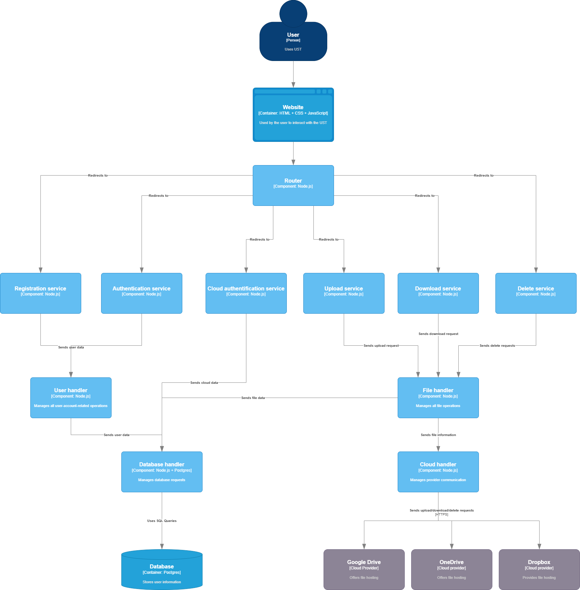

This document serves to inform the reader about the architecture and the work in the making of the Universal Storage Web Tool(UST for short).
The goal of UST is to provide a gateway, connecting three different cloud providers(Google Drive, One Drive and Dropbox) together, offering the user the ability to upload, download & delete files from any service that the user is connected to.
While the application offers the user the possibility to upload, download and delete files from different cloud providers, it also has some other, secondary functionalities. These are:
The application uses a (micro)service architecture, presented below
We used HTML, CSS and JavaScript for developing the frontend
For the backend, Node.js, PostgreSQL, OAuth 2.0 and JWT were used in developing the application
The backend is built upon Node.js's native http module, providing a lightweight and dependency-free foundation. The server's primary role, as defined in server.js, is twofold: to serve static front-end assets (HTML, CSS, JS) from a public directory and to delegate all API-related traffic to a central request handler.
The routing logic is managed in routes.js, which acts as a procedural router. It employs a series of if-else if blocks to match the incoming request's URL and HTTP method. A key function of this router is to act as a security gateway. For protected endpoints, it first parses the HttpOnly cookie to extract the JWT, authenticates the user via a call to user.checkAuth(), and only then proceeds to the relevant handler. This ensures that all business logic and data access operations are performed on behalf of an authenticated user.
The server is a collection of API endpoints, which are handled by dedicated modules for user management, cloud operations, and file transfers.
/api/register: Receives email and password. Calls the register method in the User handler (user.js). The handler hashes the password using bcrypt and stores the new user in the users table in the PostgreSQL database. Returns a success message or an error if the email already exists (HTTP 409)./api/login: Receives email and password. Calls the login method in the User handler. Authenticates the user by comparing the provided password against the stored hash using bcrypt. Upon success, generates a JWT containing the user's ID and email. This token is set in a secure, HttpOnly cookie with a 1-hour expiration./api/logged: A simple endpoint to verify if the user's session is active. It validates the JWT from the cookie. Returns { "authorized": true } on success and { "authorized": false } on failure, allowing the frontend to manage session state./api/logout: Calls the logout method in the User handler. Adds the user's current JWT to a revoked_tokens table in the database to invalidate it immediately. Instructs the browser to clear the access_token cookie./api/[google|dropbox|onedrive]/...: A group of routes handled by cloud.js for managing cloud service connections. Endpoints include /login, /logged, and /logout. All requests are authenticated via the user's main JWT./api/upload?provider=[provider_name]: Handles file and folder uploads to a specified cloud provider. The handler (upload.js) manually parses multipart/form-data to extract files, invokes the corresponding provider-specific handler, and stores metadata for each new item in the storage database table./api/cloud-files: Retrieves the user's entire file and folder hierarchy from the local storage database table. For folders, it executes a recursive SQL query to calculate the total size of all nested content./api/storage-details: Aggregates storage statistics. It queries the local database for file counts and makes live API calls to each cloud provider to fetch real-time used and total storage space./api/download/:provider/:itemId: Manages file and folder downloads. If the item is a file, it streams it directly from the cloud. If it is a folder, it uses the archiver library to create a .zip file on-the-fly, streaming all nested files into the archive./api/delete/:provider/:itemId: Handles item deletion. It first calls the cloud provider's API to delete the item, then executes a recursive DELETE query on the local storage table to remove the item and its descendants, maintaining synchronization.We chose a PostgreSQL database, accessed via the pg library, for its robustness, reliability, and support for complex queries. The database stores all user data, cloud API tokens, and a synchronized representation of the user's file structure across all linked services.
user_id (auto-incrementing primary key), email (unique), and the password (hashed with bcrypt).user_id, provider, access_token, and refresh_token. A composite primary key on (user_id, provider) ensures a user has only one token set per service.user_id, provider, item_id (from the cloud provider), parent_provider_id, item_type ('file' or 'folder'), item_name, and item_size.checkAuth function queries this table to ensure a token has not been revoked, preventing its use even if it has not yet expired.User authentication and authorization are central to the application's security model. The entire process is managed by user.js and jwt.js.
Registration & Login: The registration flow requires a valid email and a password. Passwords are never stored in plaintext; they are salted and hashed using bcrypt. The login process validates credentials by comparing the hash of the provided password with the one stored in the database.
Authorization: Upon successful login, a JSON Web Token (JWT) is generated. This token, signed with a secret key from a .env file, contains the user's ID and email. It is sent to the client in an HttpOnly cookie, a critical security measure to mitigate cross-site scripting (XSS) attacks by preventing client-side JavaScript from accessing the token.
Authenticated Requests: For every subsequent request to a protected endpoint, the server extracts and verifies the JWT. Our user.checkAuth function first checks if the token exists in the revoked_tokens table. If not, it verifies the token's signature and expiration. If the token is valid, the request proceeds; otherwise, an HTTP 401 Unauthorized error is returned, prompting the frontend to redirect the user to the login page.
Integration with Google Drive, Dropbox, and OneDrive is a core feature. Our architecture isolates the logic for each service into its own dedicated module (google.js, dropbox.js, onedrive.js) to manage the distinct requirements of their APIs.
OAuth 2.0 and Token Management: Each cloud module handles the complete OAuth 2.0 authorization code flow. When a user connects a service, the server exchanges the received code for an access_token and refresh_token. These are stored in the cloud_tokens database table.
Automatic Token Refresh: A key architectural decision was to implement a robust, automatic token refresh mechanism. Before performing any critical API call, the system first validates the access token. If the API returns a 401 error indicating an expired token, the handler automatically uses the stored refresh_token to request a new access_token from the provider. The new token is saved to the database, and the original operation is retried transparently. This provides a seamless user experience.
Unified Interface: While each module is self-contained, they expose a consistent set of functions (e.g., handleUpload, getDownloadStream, handleDelete) that are called by the main operation handlers. This approach simplifies the primary business logic. For uploads, the handlers are responsible for recursively creating any necessary parent folders that do not already exist in the cloud drive.
For code hosting & management, we used Github. We did so in order to have an easier time keeping track of implemented code.
Github